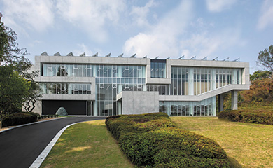
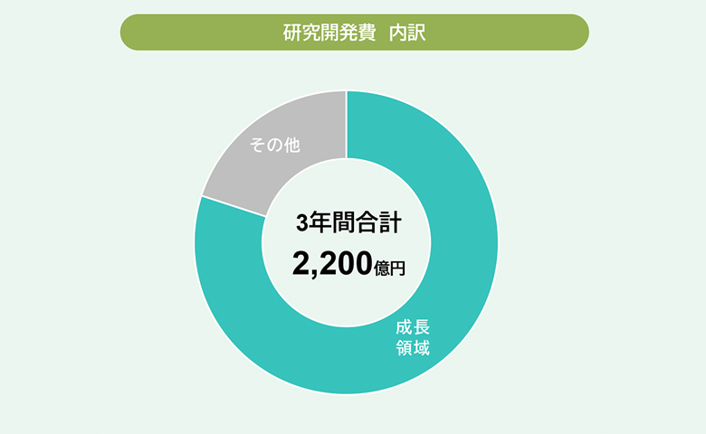

基本方針
東レグループは“Innovation by Chemistry”をコーポレート・スローガンとして、Chemistryを核に技術革新を追求し、先端材料の世界トップ企業を目指しています。
今後もより一層グループ総合力の強化を図り、革新先端材料の創出に取り組んでまいります。
東レのテクノフィールド
東レグループの研究・技術開発は、有機合成化学、高分子化学、バイオテクノロジー、ナノテクノロジーをコア技術とし、これらの技術をベースに、重合、製糸、繊維高次加工、製膜、有機合成など要素技術の深化と融合を進め、繊維、フィルム、ケミカル、樹脂、さらには電子情報材料、炭素繊維複合材料、医薬、医療機器、水処理事業とさまざまな事業分野で、先端材料を創出し事業化を実現しています。
研究・技術開発戦略
- 2023年度以降、3年間で合計2,200億円規模の研究開発費を投入
- 将来の大型テーマや高収益テーマにリソース配分
- デジタル活用により研究・技術開発、生産の高度化・効率化を推進
- 未来創造研究センターで、材料技術の深化、革新医療材・再生医療、デジタルなどのテーマを推進
研究・技術開発費
8割強を成長領域である「サステナビリティイノベーション事業」「デジタルイノベーション事業」関連の研究・技術開発に充当

未来創造研究センター外観
